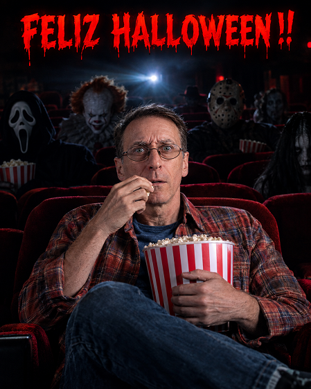

HALLOWEEN IA

🎃 PARTE 1: ¿Para qué sirve este prompt?
Este prompt es una plantilla maestra de dirección de arte cinematográfica para Inteligencia Artificial.
Su propósito es convertir una foto real de cualquier persona en el póster oficial de una película de terror de Hollywood ambientada en Halloween, situando a esa persona en primer plano dentro de una sala de cine oscura y deteriorada, mientras villanos y monstruos clásicos del cine de terror (un asesino enmascarado, un payaso siniestro, sombras misteriosas) se sientan casualmente a su alrededor.
Sirve principalmente para:
- Crear avatares, fotos de perfil o pósters virales de Halloween con calidad fotorrealista de alto presupuesto.
- Campañas publicitarias o marketing temático para cines, marcas de palomitas, eventos de Halloween o creadores de contenido.
- Regalos personalizados o contenido para redes sociales (Instagram, TikTok, etc.) gracias a su formato vertical (4:5) y su combinación de miedo con un sutil toque de humor negro.
🌟 PARTE 2: Ventajas que te da este prompt
A diferencia de pedirle a una IA "ponme en un cine de terror con monstruos", este prompt resuelve los errores más comunes de la generación por IA mediante una estructura de control profesional:
- Blindaje de identidad facial: Obliga al modelo a conservar rasgos, proporciones, edad, piel y cabello reales, evitando que te convierta en un actor genérico de stock o en una caricatura.
- Conservación estricta de vestimenta (Regla Crítica): La IA suele cambiar automáticamente la ropa a disfraces o camisetas negras. Este prompt tiene una regla de prioridad absoluta para que mantengas la misma ropa, texturas y accesorios que llevas en tu foto original.
- Sistema dinámico de 12 poses: En lugar de generar siempre la misma pose estática mirando al frente, el prompt contiene 12 reacciones cinematográficas distintas (sobresalto, risa nerviosa, sospecha, indiferencia, escondiéndose detrás de las palomitas), lo que da variabilidad infinita.
- Control tipográfico exacto: Define claramente la ubicación (arriba), el estilo y la regla de no alterar ni traducir la frase que tú elijas como título de la película.
- Composición cinematográfica profesional: Especifica lentes, relación de aspecto (4:5), iluminación volumétrica desde el proyector, profundidad de campo y paleta de color (rojo carmesí, sombras profundas, contraste controlado).
- Lista exhaustiva de restricciones negativas ("ABSOLUTAMENTE NO"): Evita deformaciones de manos, dedos adicionales, piel con aspecto plástico y ojos distorsionados.
📖 PARTE 3: Manual de uso paso a paso
Paso 1: Preparar la fotografía de referencia
Para que la IA logre el mejor resultado:
- Usa una foto con buena iluminación, donde tu rostro esté despejado y se distinga claramente.
- Asegúrate de que la ropa que quieres que aparezca sea visible en la foto (de medio cuerpo hacia arriba funciona de maravilla).
- Evita fotos muy borrosas o con filtros pesados de redes sociales.
Paso 2: Completar los campos editables
Antes de enviar el prompt, debes rellenar únicamente los dos primeros bloques:
- [FRASE DE TERROR EDITABLE]: Escribe la frase que encabezará tu póster.
Ejemplos:NO MIRES ATRÁS,LA FUNCIÓN NUNCA TERMINA,ÚLTIMA FILA,ALGUIEN TE ESTÁ MIRANDO. - [FOTO DE LA PERSONA]: Adjunta tu imagen al chat de la herramienta de IA que estés usando.
Paso 3: ¿Dónde y cómo ejecutarlo?
Este prompt está diseñado para modelos multimodales (que admiten texto + imagen). Las mejores opciones son:
- Abre Google Flow y selecciona Nano Banana 2 en proporción 16:9.
- En el panel lateral Ingredients (+ Add Image), sube tu foto y nómbrala
Personaje 1para que la IA preserve fielmente tu rostro. - Pega el prompt con la frase de terror editada en la consola y pulsa Generate.
Paso 4: Ajustes opcionales (Modo Manual vs. Modo Aleatorio)
- Si quieres que sea sorpresa: Deja el prompt tal como está; la IA seleccionará una de las 12 poses al azar.
- Si quieres una pose específica: Si te gustó una en particular (por ejemplo, la Pose 06: Escondiéndose detrás de las palomitas), ve a la sección de SISTEMA DE POSES ALEATORIAS y escribe al principio:
"Para esta generación, utiliza exclusivamente la POSE 06".
Paso 5: Consejos de postproducción
- Si el texto no sale perfecto: Aunque el prompt da instrucciones estrictas sobre el texto, algunos motores de IA aún pueden cometer pequeñas erratas tipográficas. Si eso sucede, puedes pedirle a la IA que genere la imagen sin texto (eliminar texto superior) y añadir tú mismo el título en programas como Canva o Photoshop usando una tipografía de terror (como Trajan, Creepster o Cinzel).
- Si la ropa cambia ligeramente de color: Recuérdale al modelo: "Aplica la regla de vestimenta: respeta estrictamente los colores originales de mi camiseta/chaqueta de la foto".
¿Qué es?
Ubica a la persona de la fotografía en una atmósfera cinematográfica de suspenso dentro de un cine vintage, donde presencias fantasmales comparten las butacas con iluminación tenebrosa.
¿Cómo usarlo?
- Abre Google Flow y selecciona Nano Banana 2 en formato 16:9.
- En la sección Ingredients, sube la foto del espectador (+ Add Image).
- Nombra la referencia como
Personaje 1para transferir su gesto y fisonomía exacta a la butaca. - Escribe la frase de terror en el encabezado del prompt y genera la atmósfera de miedo.
Cómo personalizar / Parámetros:
Reemplaza [ESCRIBIR / EDITAR AQUÍ LA FRASE DE TERROR] por el lema o título en mayúsculas que coronará la escena.
# 🎃 ENTRADA DEL USUARIO — COMPLETAR ESTOS DOS CAMPOS ANTES DE GENERAR ## [FRASE DE TERROR EDITABLE] **ESCRIBE AQUÍ LA FRASE QUE QUIERES QUE APAREZCA EN LA PARTE SUPERIOR DE LA IMAGEN:** `[ESCRIBIR / EDITAR AQUÍ LA FRASE DE TERROR]` > ⚠️ **IMPORTANTE:** Este campo debe ser fácilmente editable por el usuario. > La frase escrita aquí será utilizada **EXACTAMENTE COMO FUE ESCRITA** y aparecerá de forma claramente visible en la **PARTE SUPERIOR DE LA IMAGEN**, como una leyenda principal de póster cinematográfico de terror. --- ## [FOTO DE LA PERSONA] **Subir aquí la fotografía de referencia de la persona que aparecerá dentro del cine.** La persona de la fotografía proporcionada por el usuario es la referencia visual del **PERSONAJE PRINCIPAL**. --- # ⚠️ REGLAS PRIORITARIAS DEL PROMPT ## 1. IDENTIDAD DE LA PERSONA La foto proporcionada por el usuario es la referencia de identidad del **PERSONAJE PRINCIPAL**. La persona de la foto subida DEBE ser reconocible como la misma persona en la imagen final. Conservar con máxima fidelidad: * mismo rostro * misma estructura facial * mismos ojos * misma nariz * misma boca * misma línea de mandíbula * mismas características de la piel * mismo tono de piel * mismo peinado * mismo color y características del cabello * misma apariencia de edad * mismos rasgos faciales distintivos * características particulares que permitan reconocer inmediatamente a la persona **NO reemplazar a la persona por un modelo genérico.** **NO convertirla en otro actor.** **NO modificar innecesariamente su identidad facial.** La fotografía se utiliza principalmente para preservar la **IDENTIDAD DE LA PERSONA**, no para copiar su entorno original, pose, ángulo de cámara ni composición. --- # 2. ⚠️ VESTIMENTA DE LA PERSONA — REGLA CRÍTICA **LA VESTIMENTA VISIBLE EN LA FOTOGRAFÍA DE REFERENCIA DEBE SER RESPETADA Y CONSERVADA.** La ropa que lleva la persona en la fotografía forma parte de su referencia visual y debe trasladarse a la imagen final de manera fiel. ### CONSERVAR: * tipo de prendas * colores originales * combinación de prendas * diseño * estilo * estampados * patrones * texturas * mangas * cuello * cortes * chaquetas * camisas * camisetas * vestidos * pantalones * faldas * calzado visible * accesorios visibles * gafas * sombreros * bolsos * relojes * collares * pulseras * cualquier otro complemento visible La vestimenta debe conservar sus características fundamentales y seguir siendo reconocible como la misma ropa que lleva la persona en la fotografía original. ### REGLA DE PRIORIDAD ABSOLUTA Si existe cualquier conflicto entre una instrucción de vestuario de este prompt y la vestimenta visible en la fotografía: **LA VESTIMENTA DE LA FOTOGRAFÍA DEL USUARIO TIENE PRIORIDAD ABSOLUTA.** **NO cambiar automáticamente la ropa a color negro.** **NO reemplazar la ropa por un atuendo de Halloween.** **NO colocar una camiseta negra si la persona no lleva una camiseta negra en la fotografía.** **NO colocar una chaqueta negra si la persona no lleva una chaqueta negra en la fotografía.** **NO cambiar pantalones, vestidos, faldas, camisas o cualquier otra prenda por otras diferentes.** **NO eliminar prendas o accesorios visibles.** **NO agregar accesorios de Halloween que no formen parte de la fotografía original**, salvo que sean necesarios como elementos secundarios de la escena y no sustituyan la vestimenta original. La iluminación del cine puede modificar naturalmente la apariencia visual de los colores mediante sombras, reflejos y luz ambiental, pero **NO debe modificar los colores fundamentales ni el diseño de la vestimenta original**. Si alguna parte del cuerpo o vestimenta no es visible en la fotografía original, completar únicamente esa zona de manera coherente con la ropa que sí es visible, manteniendo el mismo estilo, colores y materiales. ### CONSISTENCIA La vestimenta debe permanecer consistente durante cualquiera de las **12 poses aleatorias**. La pose, expresión facial, posición de las manos y reacción emocional pueden cambiar. **La persona sigue siendo la misma persona y continúa utilizando esencialmente la misma vestimenta de la fotografía de referencia.** --- # CREAR LA IMAGEN Crear una **fotografía cinematográfica de terror de Halloween ultrarrealista**, con calidad de fotografía publicitaria de una película de terror de Hollywood de alto presupuesto, en **formato vertical 4:5**. La escena ocurre dentro de un **cine antiguo y oscuro**, con varias filas de deterioradas butacas de terciopelo rojo. La atmósfera debe ser genuinamente inquietante, llena de suspenso y cinematográfica, pero con un sutil toque de humor negro. --- # PERSONAJE PRINCIPAL — FOTO SUBIDA POR EL USUARIO La persona de la fotografía de referencia subida es el **personaje principal sentado en primer plano**. Debe integrarse naturalmente dentro del cine. La fotografía subida se utiliza principalmente para preservar la **identidad y vestimenta de la persona**, no para copiar su entorno original, pose, ángulo de cámara ni composición. Preservar la identidad reconocible con máxima consistencia: * mismo rostro y estructura facial * mismos ojos * misma nariz * misma boca * misma línea de mandíbula * mismas características de la piel * mismo tono de piel * mismo peinado y características del cabello * misma apariencia de edad * mismos rasgos faciales distintivos * misma vestimenta de referencia NO transformar a la persona en un actor genérico. NO sustituirla por una persona diferente. La persona debe verse completamente natural y fotorrealista, con anatomía y proporciones humanas realistas. --- # SISTEMA DE POSES ALEATORIAS — ⚠️ CRÍTICO **EN CADA GENERACIÓN SE DEBE SELECCIONAR ALEATORIAMENTE UNO DE LOS SIGUIENTES 12 ESCENARIOS CINEMATOGRÁFICOS DISTINTOS.** NO combinar varias poses. NO utilizar siempre la misma pose. La pose seleccionada debe sentirse espontánea y físicamente creíble, como si la fotografía hubiera capturado un momento real mientras la persona observa una película de terror. La identidad, **la vestimenta** y el entorno de la persona permanecen constantes, mientras que la **posición corporal, expresión facial, colocación de las manos y reacción emocional cambian según el escenario seleccionado aleatoriamente.** --- ## POSE 01 — PALOMITAS RELAJADO La persona está sentada cómodamente, con el cuerpo ligeramente inclinado hacia atrás contra la butaca del cine y una pierna cruzada casualmente sobre la otra. Sostiene un gran cubo de palomitas rojo y blanco sobre su regazo y come palomitas tranquilamente mientras mira la película. Su expresión es relajada y divertida, completamente cómoda a pesar de la aterradora atmósfera. --- ## POSE 02 — MIEDO REPENTINO La persona reacciona repentinamente ante algo aterrador que ocurre en la pantalla. Su cuerpo se inclina ligeramente hacia atrás, los hombros están tensos, los ojos muy abiertos y las cejas levantadas. Una mano sujeta el cubo de palomitas mientras la otra queda congelada a mitad de camino hacia su boca. Las palomitas están ligeramente desplazadas dentro del cubo. --- ## POSE 03 — ALGO DETRÁS DE ÉL La persona está sentada normalmente mirando la película, pero de repente parece percibir algo detrás de ella. Gira ligeramente la cabeza por encima del hombro mientras mira hacia atrás con cierta sospecha. Su cuerpo permanece parcialmente orientado hacia la pantalla. Un aterrador personaje de terror apenas es visible varias filas detrás de él. --- ## POSE 04 — MIRANDO POR ENCIMA DEL HOMBRO La persona gira ligeramente la parte superior de su cuerpo y mira por encima del hombro hacia el oscuro pasillo detrás de él. Su expresión muestra miedo controlado e incertidumbre. Una mano descansa sobre la butaca mientras la otra sostiene el cubo de palomitas. --- ## POSE 05 — COMPLETAMENTE RELAJADO La persona está profundamente relajada, hundida cómodamente en la butaca del cine con una expresión casi divertida. Sus piernas están colocadas de manera casual, las palomitas descansan sobre su regazo y sostiene una palomita entre los dedos. Parece completamente indiferente mientras aterradores personajes están sentados cerca. --- ## POSE 06 — ESCONDIÉNDOSE DETRÁS DE LAS PALOMITAS La persona levanta ligeramente el gran cubo de palomitas hacia su pecho, como si instintivamente lo utilizara como un pequeño escudo. Sus ojos permanecen visibles por encima del cubo mientras observa nerviosamente la pantalla. Su expresión combina miedo y humor negro. --- ## POSE 07 — CONGELADO EN SUSPENSO La persona se inclina hacia delante en dirección a la pantalla, con los codos cerca del cuerpo, completamente concentrada en lo que está viendo. Su expresión es tensa y concentrada. Una mano sostiene una palomita congelada justo antes de llegar a su boca. --- ## POSE 08 — MIRANDO TRANQUILAMENTE EL TERROR La persona permanece sentada erguida con una expresión tranquila, comiendo palomitas casualmente mientras una aterradora escena se desarrolla a su alrededor. Su postura transmite seguridad y diversión en lugar de miedo. --- ## POSE 09 — ALGO LO ESTÁ OBSERVANDO La persona mira hacia la pantalla, pero su expresión sugiere que se ha dado cuenta de que algo dentro del cine lo está observando. Su cuerpo permanece prácticamente inmóvil mientras sus ojos se desplazan sutilmente hacia un lado. Una inquietante figura de terror está situada muy atrás, casi completamente oculta en la oscuridad. --- ## POSE 10 — SOBRESALTADO La persona acaba de sobresaltarse por un momento repentino de la película. Su torso se mueve hacia atrás, sus ojos se abren y su boca queda ligeramente abierta en una expresión de sorpresa genuina. El cubo de palomitas se inclina ligeramente, pero permanece sujeto de forma segura con sus manos. Algunas palomitas aparecen desplazadas de manera natural. --- ## POSE 11 — RIÉNDOSE CASUALMENTE La persona reacciona ante un momento aterrador con una pequeña risa inesperada, como si la escena de terror le resultara entretenida en lugar de aterradora. Su postura es relajada y natural. Un brazo descansa cómodamente sobre la butaca mientras sostiene palomitas con la otra mano. --- ## POSE 12 — REALIZACIÓN INQUIETANTE La persona permanece casi completamente inmóvil, mirando hacia la pantalla con una expresión seria. Su postura está ligeramente tensa. Gira lentamente la cabeza hacia la oscuridad situada a su lado o detrás de él, como si se estuviera dando cuenta de que los personajes de terror quizá no formen realmente parte de la película. --- # REGLA DE ALEATORIEDAD Seleccionar exactamente **UNA sola pose al azar** en cada generación. NO combinar poses. NO mostrar varias versiones de la persona. La pose seleccionada debe modificar visiblemente: * lenguaje corporal * posición corporal * expresión * posición de manos * reacción emocional pero debe mantener: * la misma identidad * el mismo rostro * la misma persona * la misma vestimenta de referencia * el mismo concepto cinematográfico general --- # ENTORNO CINEMATOGRÁFICO Detrás del personaje principal deben aparecer varios **arquetipos clásicos del terror**, sentados por diferentes zonas del cine, también viendo la película y ocasionalmente sosteniendo palomitas. Incluir figuras de terror visualmente diferenciadas, como: * una figura misteriosa con una máscara blanca, alargada y sin expresión, y una túnica negra * un payaso siniestro de aspecto vintage, con maquillaje pálido y cabello rojo anaranjado * un aterrador asesino con máscara de hockey y ropa de trabajo oscura * otras figuras pálidas y misteriosas dispersas por las filas traseras Deben aparecer como **personajes secundarios**, sin reemplazar ni dominar visualmente a la persona de la fotografía de referencia. Algunas figuras deben ser claramente visibles, mientras que otras deben estar parcialmente ocultas entre las butacas o perdidas en las sombras. Su presencia debe crear una contradicción visual divertida: **la persona principal simplemente intenta disfrutar de una película mientras aterradoras criaturas están sentadas casualmente viendo la película junto a ella.** --- # ILUMINACIÓN CINEMATOGRÁFICA El cine debe ser extremadamente oscuro. Un potente proyector situado detrás de los personajes genera un suave haz atmosférico de luz que atraviesa la sala. Utilizar: * luz volumétrica del proyector * ligera neblina atmosférica * iluminación de contorno realista alrededor de cabezas y hombros * sombras cinematográficas profundas * reflejos realistas * sutil iluminación ambiental roja proveniente de las butacas del cine * luces altas controladas * alto rango dinámico Paleta de colores: **negro profundo + rojo carmesí oscuro + gris carbón + blanco apagado** Evitar colores brillantes o alegres en la ambientación. **IMPORTANTE:** No modificar por ello los colores originales de la vestimenta de la persona. --- # PALOMITAS Incluir un gran **cubo de palomitas rojo y blanco a rayas**, realista. Las palomitas deben verse físicamente creíbles: * granos individuales * formas irregulares realistas * sombras naturales * textura realista * pequeñas migas * interacción físicamente correcta con las manos de la persona Si la pose seleccionada implica movimiento, las palomitas pueden desplazarse naturalmente, pero el cubo debe permanecer anatómica y físicamente plausible. --- # COMPOSICIÓN La persona principal debe permanecer como el **punto focal visual principal**. Utilizar una composición cinematográfica simétrica o cuidadosamente equilibrada. Las butacas del cine deben desaparecer progresivamente dentro de la oscuridad, creando una fuerte sensación de profundidad. ### Cámara: * ligeramente por debajo del nivel de los ojos * encuadre de cuerpo medio-completo * perspectiva realista * características naturales de lente * profundidad de campo cinematográfica * enfoque nítido en la persona principal * fondo progresivamente más desenfocado Los personajes de terror deben formar diferentes capas visuales detrás del personaje principal. La imagen final debe sentirse como una auténtica **fotografía promocional de una película de terror de Halloween de alto presupuesto**, no como una ilustración. --- # FRASE DE TERROR EDITABLE — ⚠️ MUY IMPORTANTE Utilizar exactamente la frase introducida por el usuario en el campo: **[FRASE DE TERROR EDITABLE]** La frase debe aparecer de forma **CLARAMENTE VISIBLE, DESTACADA Y LEGIBLE EN LA PARTE SUPERIOR DE LA IMAGEN**. Debe estar ubicada **arriba de la escena cinematográfica**, funcionando como la leyenda principal de un póster de película de terror. ### REGLAS DEL TEXTO * El usuario escribe la frase. * El usuario puede editarla antes de generar la imagen. * Utilizar exactamente el texto introducido. * No modificar las palabras. * No traducir. * No corregir ortografía. * No agregar palabras. * No quitar palabras. * No sustituir la frase por otra. * No inventar una frase diferente. * No mover la frase a la parte inferior. * No ocultar la frase detrás de elementos. * No cortar ninguna parte del texto. * Mantenerla completamente visible. * Mantenerla altamente legible. La tipografía debe ser: * cinematográfica * elegante * ominosa * relacionada con Halloween * profesional * altamente legible * integrada naturalmente con la estética de un póster de película de terror La frase debe estar **claramente separada visualmente de la escena**, pero integrada dentro de la composición. ### EJEMPLO Si el usuario escribe: **We Are Watching You** mostrar exactamente: **We Are Watching You** en la parte superior. Si el usuario escribe: **NO MIRES ATRÁS** mostrar exactamente: **NO MIRES ATRÁS** en la parte superior. Si el usuario introduce cualquier otra frase, utilizar exactamente esa frase. --- # ESTILO VISUAL Fotografía cinematográfica ultrarrealista. Publicidad de película de terror de Halloween de Hollywood de alto nivel. Piel humana fotorrealista. Cabellos individuales visibles. Textura realista de las telas. Palomitas realistas. Expresiones faciales naturales. Manos y dedos físicamente correctos. Anatomía realista. Grano cinematográfico sutil. Neblina atmosférica. Iluminación volumétrica. Colorización cinematográfica profesional. Alto rango dinámico. Negros profundos. Luces altas controladas. Diseño de producción premium. Entorno con nivel de detalle extremo. Profundidad de campo realista. Sujeto principal nítido. Características fotográficas de lente. **Fotorrealismo ultradetallado en 8K.** El resultado final debe parecer una **fotografía real capturada en el set de una importante película de terror de Halloween de Hollywood**, no una obra de arte generada por IA. --- # CONTROL DE IDENTIDAD, VESTUARIO Y CALIDAD ## ABSOLUTAMENTE NO: * reemplazar a la persona subida por otra persona * cambiar la identidad de la persona * feminizar o masculinizar innecesariamente la apariencia de la persona * crear un rostro de caricatura * exagerar los rasgos faciales * exagerar las proporciones corporales * deformar el cuerpo * crear anatomía antinatural * crear manos deformes * crear dedos adicionales * fusionar dedos * deformar el rostro * cambiar innecesariamente la edad aparente de la persona * cambiar los colores originales de la vestimenta * reemplazar la ropa original por ropa negra * sustituir la vestimenta por un disfraz de Halloween * eliminar prendas visibles de la fotografía * eliminar accesorios visibles de la fotografía * inventar una vestimenta completamente diferente * ignorar la vestimenta de la fotografía * hacer que la persona parezca otro actor * hacer que los personajes de terror sean visualmente más dominantes que la persona principal * utilizar una apariencia genérica de modelo de stock * eliminar el entorno del cine * convertir la imagen en una ilustración * utilizar iluminación plana de estudio * crear una apariencia artificial de piel plástica * alterar innecesariamente la identidad visual de la persona * cambiar la frase escrita por el usuario * modificar, traducir o reescribir la frase * colocar la frase en otra zona diferente de la parte superior * cortar u ocultar la frase Mantener **proporciones humanas realistas, física creíble, expresiones auténticas, vestimenta coherente con la fotografía de referencia y realismo fotográfico durante toda la imagen.** --- # RESULTADO FINAL La imagen final debe comunicar simultáneamente: **HALLOWEEN + TERROR + CINE + HUMOR NEGRO + FOTORREALISMO CINEMATOGRÁFICO + PERSONAJE PERSONALIZADO DEL USUARIO + VESTIMENTA ORIGINAL DEL USUARIO + FRASE EDITABLE EN LA PARTE SUPERIOR.** ## PRIORIDADES ABSOLUTAS DEL SISTEMA **1. IDENTIDAD DE LA PERSONA DE LA FOTO.** **2. VESTIMENTA ORIGINAL DE LA PERSONA DE LA FOTO.** **3. FRASE ESCRITA POR EL USUARIO, EXACTAMENTE COMO FUE INTRODUCIDA, EN LA PARTE SUPERIOR.** **4. SELECCIÓN ALEATORIA DE UNA DE LAS 12 POSES.** **5. AMBIENTE CINEMATOGRÁFICO DE TERROR DE HALLOWEEN.** **6. FOTORREALISMO EXTREMO.** La identidad, rostro y vestimenta de la persona deben permanecer consistentes. La pose y reacción emocional deben variar aleatoriamente. La frase debe ser editable por el usuario y aparecer claramente en la parte superior. El resultado debe parecer una auténtica fotografía cinematográfica de una película de terror de Halloween de gran presupuesto.